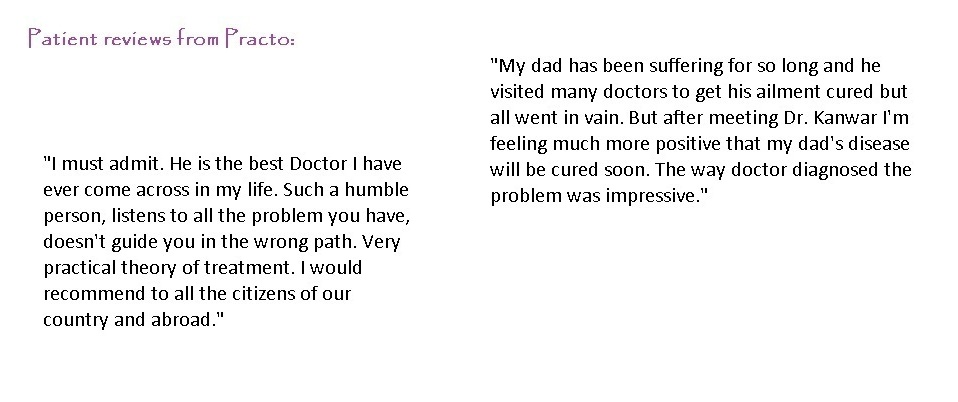
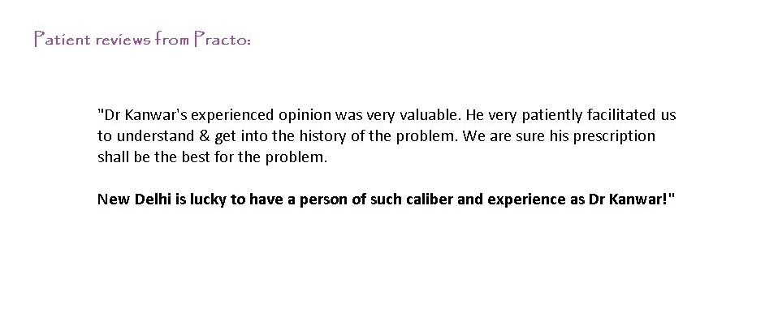
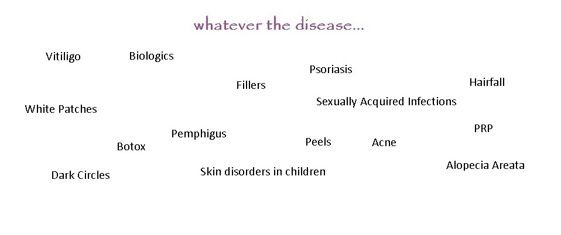
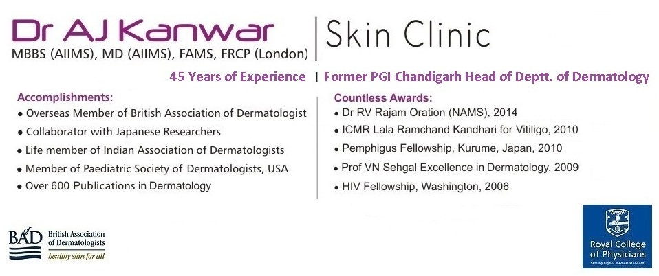
 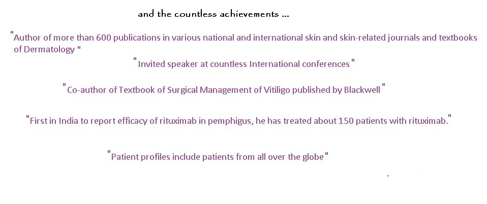
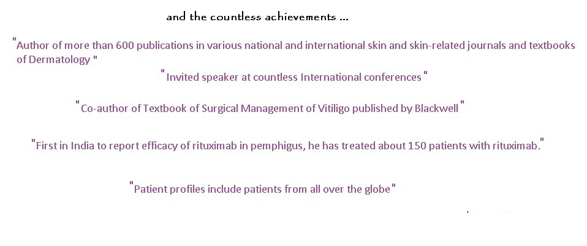
|
 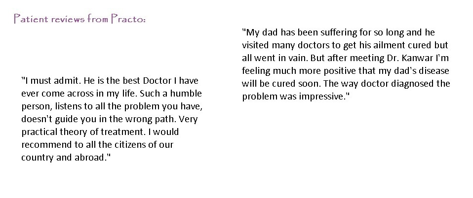
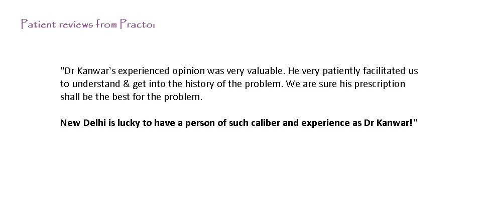
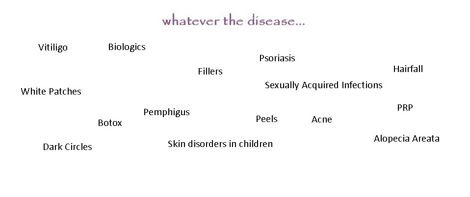
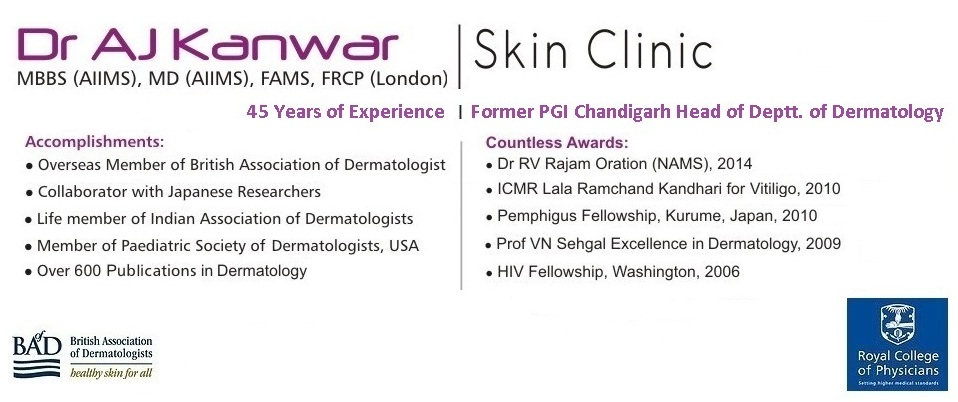
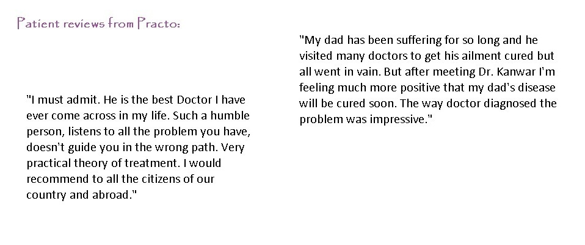
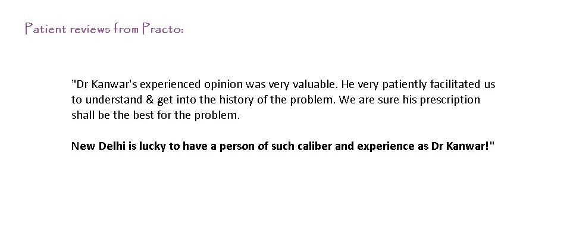
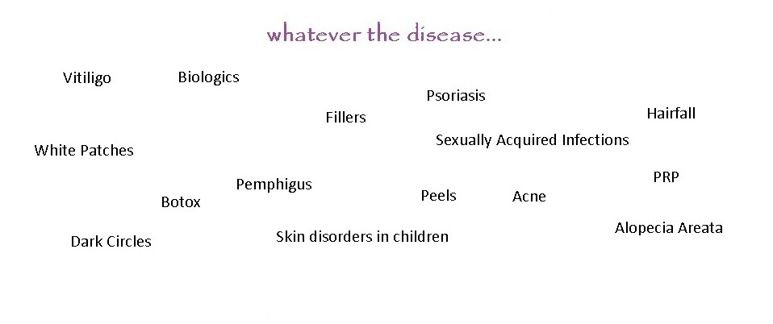
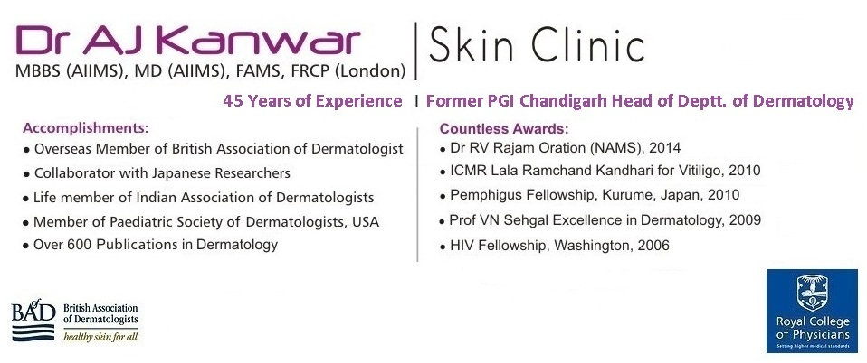
|
Dr AJ Kanwar's Premier Skin clinic is located centrally in Greater Kailash, South Delhi. At the clinic you will find a very warm & friendly atmosphere for all patients. Formerly a PGI Chandigarh Head of Department of Dermatology, Leprology and Venerology, Dr AJ Kanwar experience, speaks for himself. National Award Winner 2016 (DR BC Roy Award), Dr AJ Kanwar's clinical expertise spreads over 45 years and he uses all the latest and safe procedures to make your skin looking great. Dr AJ Kanwar, M.B.B.S. and M.D. [from AIIMS New Delhi], is the most experienced and a world renowned dermatologist in India. He is an expert in diagnosis and management of skin, hair and nail diseases. At Dr AJ Kanwar's Premier Skin Clinic, you will not be consulted by anyone else except the doctor himself. This is what makes the clinic stand out to others. Dr AJ Kanwar's countless list of achievements and accolades in the field of Dermatology are world known and provide a sound assurance of his prescription's effectiveness. At his skin clinic, Dr AJ Kanwar aims to offer his patients a no fuss treatment of any skin problem they may be suffering from. His patients swear by his prescriptions effectiveness as well his humble approach to his clinical practice as well his avoidance of unnecessary tests. |
||||||
| ||||||
| ||||||